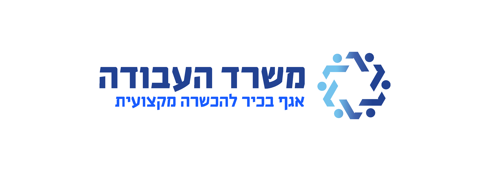

פרויקט בית-ספרי · שכבת י"ב
הכוון למכינות קדם-צבאיות
מסע שנתי של חשיפה, ליווי ובחירה — מסיור צוותי, דרך שיחות אישיות וערב הורים, ועד יום פתוח ורישום בפועל.

40%
מהתלמידים נכנסו לתהליך בירור ובדיקה מעמיק מול מכינות
~18%
מהתלמידים נרשמו בפועל למכינות קדם-צבאיות
שינוי תפיסתי
עולם המכינות הפך לאפשרות טבעית ומוכרת בקרב התלמידים
מטרות התהליך
1
העמקה ערכית וחיבור לאומי
הבניית קומה נוספת באישיות התלמיד, ביסוס עולמו הערכי וחיזוק הזיקה למדינה.
2
מיצוי אישי
הכנה לשירות צבאי משמעותי ותורם יותר.
3
הרחבת אופקים
היכרות עם תרבויות חדשות ועולמות תוכן חדשים טרם הגיוס.
אתגרים בדרך
1
פער תרבותי
היעדר היכרות מוקדמת עם מסגרת המכינות.
2
תפיסה שגויה
התייחסות לעולם המכינות כאל "בזבוז זמן".
3
מוטיבציה ללמידה
התנגדות ראשונית — "אין לי כוח ללמוד עוד".
4
משברי השנה החולפת
היעדרות שלושה מובילים מרכזיים (מילואים, חופשת לידה) לצד אתגרי המלחמה.
השותפים בתהליך
1
מנהלת בית הספר
2
מחנכי השכבה
3
יועצת חינוכית
4
בנות שירות
5
נציגה מטעם העירייה
"
התהליך הפך את המכינות מ"בזבוז זמן" לאפשרות טבעית, מוכרת ומבוקשת — והבוגרים יוצאים לשירות עם עוגן ערכי איתן יותר.
5
שותפים
בתהליך
בתהליך
12
חודשי
ליווי
ליווי
2
ימים
פתוחים
פתוחים
תכנית עבודה
ציר הזמן השנתי
1
יוני
- סיור צוות שכבת י"ב במכינות קדם-צבאיות
2
ספטמבר
- חשיפה לעולם המכינות — שיחה שכבתית
- חשיפה לעולם המכינות — ערב הורים
3
אוקטובר–נובמבר
- מיפוי תלמידים פוטנציאליים
- כינוס לשיחה + בוגר ביה"ס
- שיחות אישיות להתאמה
- חיבור צוות המורים המקצועיים
4
דצמבר
סיום הרישום
סיום הרישום
- יום פתוח 1 + רפלקציה
- יום פתוח 2 + שיח רפלקטיבי
- שיתוף ההורים לאורך כל הדרך
5
מאי–יוני
- הוקרה לבוחרים במכינות
- חיזוק החלטת התלמידים שסגרו